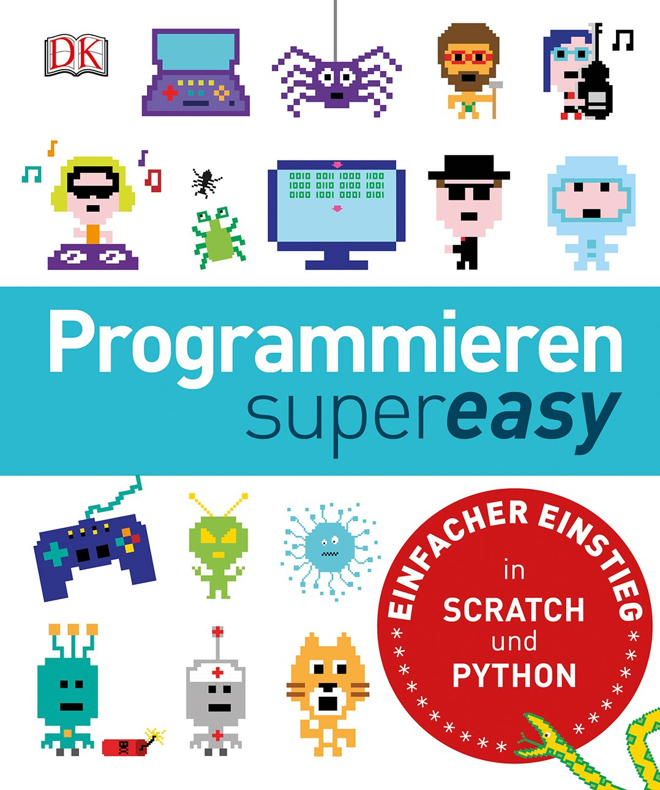
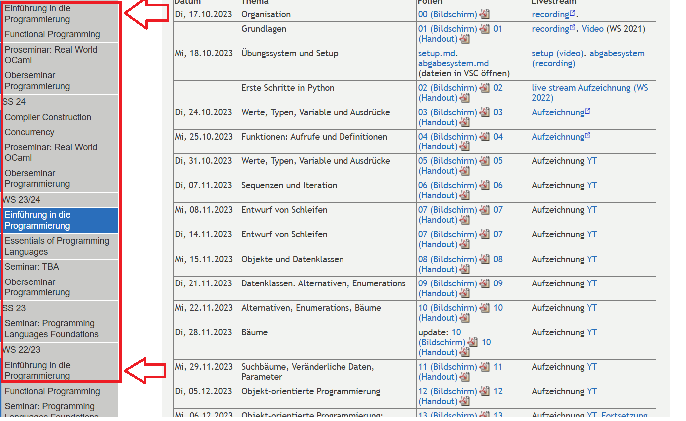
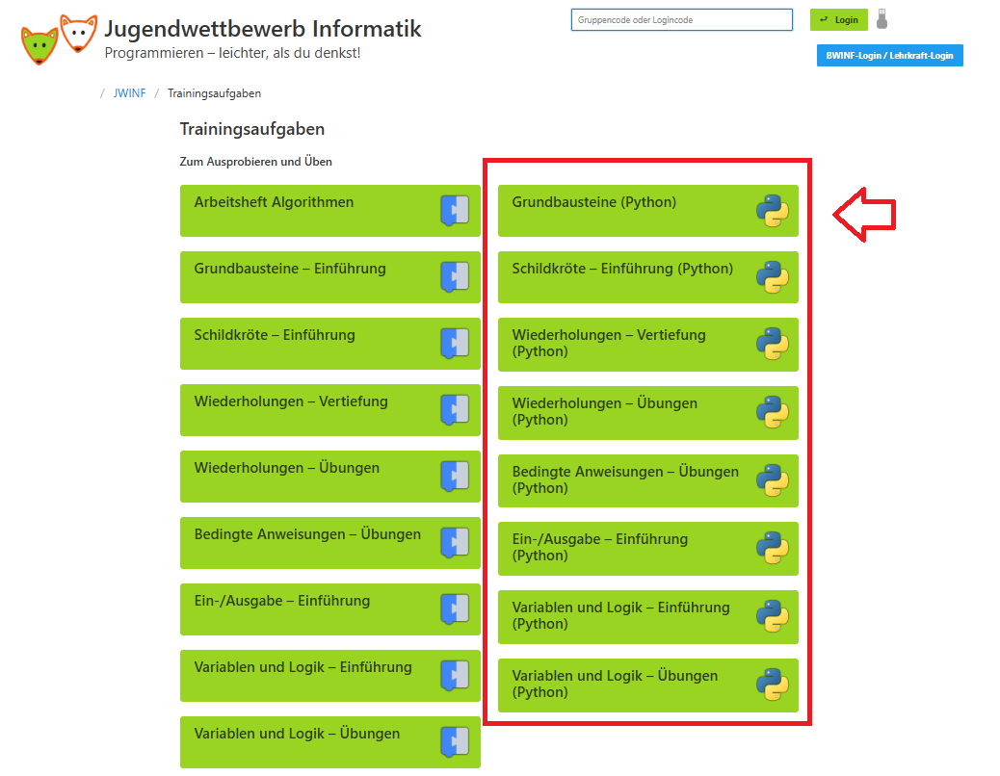

Zusätzliche Lernressourcen
Die Ressourcen werden ungefähr in absteigendem Schwierigkeitsgrad angezeigt.
Achtung: Alle Ressourcen und Ideen sind keinesfalls als Ersatz für die Vorlesung und die Übungsaufgaben gedacht, sondern als Ergänzung!
Tipps zur Umgang mit der Seite
Fühlen sich die Vorlesungsinhalte zu schwer an und du schaffst kaum eine Teilaufgabe ohne ganz viel Hilfe von ChatGPT und co.? Oder willst du aus sonstwelchen Gründen Python- und Programmier-Grundkenntnisse eingehender vertiefen und dabei vielleicht sogar (ein bisschen) Spaß haben? Hier sind ein paar Ressourcen und Ideen, die dir dabei helfen könnten.
Mein Tipp: Nimm dir 1-2 Stunden pro Woche und gehe einer der empfohlenen Tätigkeiten oder einer Mischung daraus nach.
Ich empfehle folgende Vorgehensweise:
- Probiere ruhig alles auf dieser Seite ein bisschen aus und schau, was dir besonders liegt.
- Fange mit den Sachen an, die dir besonders Spaß machen (oder am wenigsten widerstreben). Manchen gefallen systematische Lehrgänge, weil sie gerne kleinschrittig geführt werden. Andere schätzen es besonders, autonom und eigenständig Entscheidungen zu treffen und rumzutüfteln. In dem Fall werden wahrscheinlich Spielentwicklung oder die Entwicklung einfacher Alltagsprogramme ansprechender wirken.
- Lege den Fokus darauf, dass du es dir zur Gewohnheit machst, wöchtentlich etwas Extra-Lernzeit ins Programmieren zu stecken. Das wird am besten funktionieren, wenn du die Sachen machst, die dir am meisten Spaß machen.
- Nachdem du es ein paar Wochen lang geschafft hast, neben den wöchentlichen Übungsaufgaben aus der Vorlesung Extrazeit ins Programmieren zu stecken, kannst du an der Effizienz und Effektivität deiner Tätigkeiten schrauben. Zum Beispiel kannst du versuchen, weniger KI zu nutzen oder gezielt vorlesungsähnliche Aufgaben zu bearbeiten (Vorkurs oder Aufgaben aus alten Semestern)
Die Sparte "Entdeckungslernen" hat hohes Frustrationspotenzial. Manche Menschen schätzen das Kreieren von etwas eigenem so sehr, dass es sie über die Orientierungslosigkeit und über das teils hohe Niveau der Aufgaben hinweg motiviert. Bei vielen Menschen ist das aber nicht der Fall. Wenn dir das Entdeckungslernen keinen Spaß macht, dann konzentriere dich auf die geführten Aufgaben
Entdeckungslernen / Vibe-Coding
Tipps zur Umsetzung: Eigene Projekte
Solche Projekte sind häufig für Anfänger*innen sehr kompliziert. Da empfiehlt sich, LLMs wie ChatGPT und co. zur Hilfe zu ziehen. Das Schöne ist: Auch wenn du die KI dir fast den ganzen Code schreiben lässt, wirst du wahrscheinlich viel lernen. Hier kannst du die KI viel intensiver nutzen als bei der Bearbeitung von Übungsaufgaben: Du kannst dir eine komplette vorläufige Lösung liefern lassen und im Anschluss mit dem Material spielen und es weiterentwickeln. So bin ich zum Beispiel bei der Erstellung dieser Webseite vorgegangen: Da ich nur absolute Grundlagenkenntnisse von HTML und CSS habe, habe ich ChatGPT erstmal die gesamte Seite von A bis Z machen lassen. Danach habe ich an unterschiedlichen Stellen eingegriffen und Sachen verändert und angepasst. Zur Erinnerung: Diese Vorgehensweise ist empfehlenswert fürs Freizeitprogrammieren, aber nicht für die Bearbeitung der Übungsaufgaben! Bei den Übungsaufgaben sollte man keine oder nur wenig KI nutzen (siehe Hausaufgaben und KI-Nutzung).
Für Zocker*innen: Plugins und Mods für existierende Computerspiele - aber am besten gleich in Python!
Tipps zur Umsetzung: Plugins und Mods
Viele der beliebten und weit verbreiteten Spiele erlauben kein Modding oder Plugins in Python, sondern nur in anderen Sprachen (C++, C#, JS, Java, Lua...). Ich würde eher davon abraten, parallel zur Einführung in die Programmierung eine weitere Sprache zu lernen, weil die Syntax-Unterschiede verwirrend sind und den Lernprozess für Python auszögern könnten. Vor allem, wenn man ohnehin Schwierigkeiten hat, der Vorlesung zu folgen. Für Spiele, die Java-Mods oder -Plugins akzeptieren, kann man Python-Code schreiben und mithilfe von Jython in Java ausführen. Ähnlich lässt sich auch mithilfe von Transcrypt oder Rapydscript Python-ähnliche Syntax in Javascript-Code übersetzen für Spiele, die Javascript-Mods und -Plugins erlauben.
- Minecraft-Plugins mit Python
Hierzu gibt es sogar eine Buch-Anleitung, die in der Bibliothek der Pädagogischen Hochschule Freiburg verfügbar ist ("Programmieren lernen mit Python und Minecraft"). Oder frag mich privat nach einem Exemplar, das ich dir ausleihen kann.
- Andere Spiele (Da musst du eigene Recherchen anstellen - Ich weiß nicht, ob das
wirklich funktioniert): Du kannst gucken, ob eines
der Spiele, die du magst, Python-, Java- oder Javascript-Mods akzeptiert. Theoretisch sollte man Java- und
JS-Mods in Python oder Python-ähnlichen Syntax schreiben und durch Jython bzw. Transcrypt / Radyscript in
der Zielsprache laufen lassen können.
Ein paar Beispiele für Computerspiele, die Python-, Java- oder Javascript-Mods erlauben, sind:
- The Sims 4
- Civilization IV
- World of Tanks
- GTA V
- Red Dead Redemption 2
- Mindustry
Mini-Programme, die dir im Alltag oder im Studium helfen
Es macht besonders Spaß, wenn man etwas Selbstprogrammiertes im Alltag nutzt. Gehe von der Leitfrage aus "Welches Programm ist für mich persönlich besonders nützlich?"
- Automatisiere deine Dokumentenbearbeitung in Word. Man kann auch die Arbeit mit Excel und anderen Office-Programmen mithilfe von Python automatisieren.
- Web scraping mit Python: Vergleiche automatisch Preise für deine Wunschprodukte und setze dir einen Alarm, wenn ein vergriffenes Produkt wieder verfügbar ist.
- Dateien auf deinem Computer (z. B. Downloads) automatisch in einer Ordnerstruktur ordnen
- Fast alle langweiligen Routinenaufgaben auf deinem Computer
Welche Arten von Problemen sind überhaupt geeignet?
Wähle am besten Mini-Projekte, wo du nicht viel mit programmexternen Problemen kämpfen musst, sondern dich auf die Programmlogik und die Syntax konzentrieren kannst. Zum Beispiel führen Programme für deinen Mail-Account (z. B. Rechnungssammler und -sortierer oder ein zusätzlicher Spam-Checker) schnell zum stundenlangen Rumfummeln an Einstellungen auf deiner Mail-Seite, damit dein Programm überhaupt erst Zugriff auf deine Mails erhält. Das kann trotzdem lohnend sein, aber es birgt auch Frustrationsporenzial. Die Arbeit mit öffentlich frei zugänglichen Seiten dürfte viel weniger Probleme darstellen und eignet sich auch gut für Mini-Python-Projekte. Insgesamt eignet sich Python für Alltagsprobleme mit wiederkehrenden, langweiligen oder datenbezogenen Aufgaben: Dateien sortieren, Copy-Paste automatisieren, Webseiten oder Formulare auslesen, Daten analysieren, Reports erzeugen oder Benachrichtigungen verschicken. Kurz: alles, was sich regelmäßig und nach klaren Mustern wiederholt.
Dieses Buch könnte dir weitere Anregungen geben (ab Kapitel 10): Automate the Boring Stuff
Retro-Spiele erstellen mit Pyxel
Warum Pyxel?
Diese Engine wird als beginnerfreundlicher als andere typische Engines wie Pygame bewertert. Außerdem ist die Engine so gestaltet, dass Bild- und Sounderstellung besonders einfach ist, sodass der Fokus auf das Code-Schreiben gelegt werden kann, statt sich mit Bilderstellungsprogrammen zu plagen. Projekte in der Engine sind code-technisch ähnlich schwer wie die Vorlesung, aber es ist potenziell sehr motivierend, ganze Spiele selbst von Grund auf zu entwickeln. Du kannst die Spiele sogar mit wenig Aufwand in HTML-Format überbringen und online mit deinen Freunden teilen, z. B. über Github-Pages. Dann bekommst du als kleiner Bonus auch ein bisschen Einblicke in Git.
Ich würde mit dem Youtube-Tutorial anfangen und mich dann von Projekten auf der Github-Seite inspirieren lassen. Bei Fragen und Problemen hilft die Github-Seite sowie ChatGPT und co...

Keine Lust auf Pyxel? Siehe Andere Python-Spiel-Engines
Scratch: Blockbasiertes Programmieren
Wenn du gravierende Schwierigkeiten beim Programmieren hast, kannst du noch eine Ebene tiefer ansetzen: Die Plattform wurde zwar in erster Linie für Kinder entwickelt, doch es lassen sich hier auch komplzierte Projekte umsetzen. Als Einstieg ins Programmieren ist die Arbeit mit Drag&Drop-Blocks sehr beliebt.
Es gibt nicht zuletzt auf der Scratch-Seite Tutorials für den Einstieg. Für Projektideen einfach googlen. Zum Beispiel diese PDF.
Ein empfehlenwertes Buch ist "Programmieren Super Easy". Es führt in die Grundlagen von Scratch ein und führt dann in Python über. Du kannst es in der tf- oder PH-Bibliothek ausleihen oder bei mir.

Geführte Augaben
Systematische Lehrgänge
Systematische Abdeckung von Python-Grundlagen anhand von geführten Aufgaben mit klaren Lösungserwartungen.
- Übungsaufgaben aus alten
EidP-Vorlesungen: Vielleicht willst du 'hardcore'-Extraübung und kannst dich selbstständig zu noch mehr
Übungsaufgaben auf Vorlesungsniveau motivieren? Navigiere dich über die Leiste links zu den vergangenen
Semestern:
Bild
 - Programmier-Vorkurs: Für alle, die den Kurs vor Semesterstart versäumt haben: Sehr empfehlenswerte Aufgaben, ganz nah an die Inhalte und das Format der Vorlesung, aber einfacher. Tipp: Starte direkt mit den Aufgaben und nutze das Skript nur als Nachschlagewerk. Lösungen
- algo.bwinf: Eine Seite von den Bundesweiten Informatikwettbewerben (BWINF) für Schüler*innen, gefördert vom Bundesministerium für Bildung. Die Aufgaben sind kleinschrittig und zu Beginn sehr einfach, werden aber zunehmend schwerer. Gedacht für Studierende, die die absoluten Python-Basics systematisch wiederholen und üben wollen. Die Sparte "Algorithmen-Abenteuer" empfehle ich allerdings nicht (teils unklare Aufgabestellungen, wenig Hilfen, bizarres Interpreter-Verhalten).
 |
 |
- Trainingsaufgaben vom Jugendwettbewerb Informatik: Ebenso ein Angebot der BWINF für Schüler*innen und auf einem ähnlichen Niveau.
|  |  |
Handy-Apps:
Handy-Apps taugen wohl kaum als einzige oder hauptsächliche Lernquelle, sie sind aber nett als Ergänzung. Das Wissen kommt nur in sehr kleinen Portionen und es fehlt das Tippen am Computer und insgesamt der ganze Programmschreibprozess. Handy-Apps haben aber kleine potenzielle Vorteile: Motivation und Konsistenz. Die Apps motivieren à la Duolingo, sich jeden Tag ein bisschen mit der Materie zu beschäftigen.
Die kostenlosen Versionen reichen für das kleine 'Auffrischungstraining' zwischendruch völlig aus.